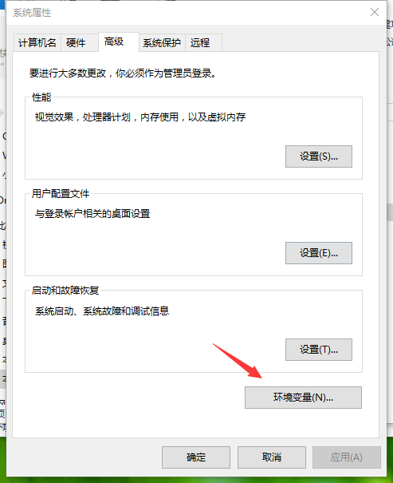

<!DOCTYPE html>
<html>
<head><meta name="generator" content="Hexo 3.8.0">
  <meta charset="utf-8">
  

  
  <title>Win10下的Python环境配置 | 孔天逸&#39;Blog</title>
  <meta name="viewport" content="width=device-width, initial-scale=1, maximum-scale=1">
  <meta name="description" content="原料64位Windows10 专业版  安装Python访问python的官方网站www.python.org，点击download，如图一   选择2.7版本，如图二  下载好图三所示文件  双击打开上述安装程序，选择是否给所有用户使用，默认是给全局，点Next   选择安装路径，选好后Next   选择要安装的模块，默认即可，Next   安装完了，点击Finash   去安装目录看一下目录结">
<meta name="keywords" content="Python">
<meta property="og:type" content="article">
<meta property="og:title" content="Win10下的Python环境配置">
<meta property="og:url" content="http://kongtianyi.github.io/2016/08/08/python/Win10下的Python环境配置/index.html">
<meta property="og:site_name" content="孔天逸&#39;Blog">
<meta property="og:description" content="原料64位Windows10 专业版  安装Python访问python的官方网站www.python.org，点击download，如图一   选择2.7版本，如图二  下载好图三所示文件  双击打开上述安装程序，选择是否给所有用户使用，默认是给全局，点Next   选择安装路径，选好后Next   选择要安装的模块，默认即可，Next   安装完了，点击Finash   去安装目录看一下目录结">
<meta property="og:locale" content="zh-Hans">
<meta property="og:image" content="http://kongtianyi.github.io/image/spider/1.png">
<meta property="og:image" content="http://kongtianyi.github.io/image/spider/2.png">
<meta property="og:image" content="http://kongtianyi.github.io/image/spider/3.png">
<meta property="og:image" content="http://kongtianyi.github.io/image/spider/4.png">
<meta property="og:image" content="http://kongtianyi.github.io/image/spider/5.png">
<meta property="og:image" content="http://kongtianyi.github.io/image/spider/6.png">
<meta property="og:image" content="http://kongtianyi.github.io/image/spider/7.png">
<meta property="og:image" content="http://kongtianyi.github.io/image/spider/8.png">
<meta property="og:image" content="http://kongtianyi.github.io/image/spider/26.png">
<meta property="og:image" content="http://kongtianyi.github.io/image/spider/9.png">
<meta property="og:image" content="http://kongtianyi.github.io/image/spider/10.png">
<meta property="og:image" content="http://kongtianyi.github.io/image/spider/11.png">
<meta property="og:image" content="http://kongtianyi.github.io/image/spider/12.png">
<meta property="og:image" content="http://kongtianyi.github.io/image/spider/13.png">
<meta property="og:image" content="http://kongtianyi.github.io/image/spider/14.png">
<meta property="og:image" content="http://kongtianyi.github.io/image/spider/15.png">
<meta property="og:updated_time" content="2016-08-10T15:34:29.477Z">
<meta name="twitter:card" content="summary">
<meta name="twitter:title" content="Win10下的Python环境配置">
<meta name="twitter:description" content="原料64位Windows10 专业版  安装Python访问python的官方网站www.python.org，点击download，如图一   选择2.7版本，如图二  下载好图三所示文件  双击打开上述安装程序，选择是否给所有用户使用，默认是给全局，点Next   选择安装路径，选好后Next   选择要安装的模块，默认即可，Next   安装完了，点击Finash   去安装目录看一下目录结">
<meta name="twitter:image" content="http://kongtianyi.github.io/image/spider/1.png">
  
    <link rel="alternate" href="/atom.xml" title="孔天逸&#39;Blog" type="application/atom+xml">
  
  
    <link rel="icon" href="/favicon.png">
  
  
    <link href="//fonts.googleapis.com/css?family=Source+Code+Pro" rel="stylesheet" type="text/css">
  
  <link rel="stylesheet" href="/css/style.css">
</head>
</html>
<body>
  <div id="container">
    <div id="wrap">
      <header id="header">
  <div id="banner"></div>
  <div id="header-outer" class="outer">
    <div id="header-title" class="inner">
      <h1 id="logo-wrap">
        <a href="/" id="logo">孔天逸&#39;Blog</a>
      </h1>
      
        <h2 id="subtitle-wrap">
          <a href="/" id="subtitle">いらしゃいませ。</a>
        </h2>
      
    </div>
    <div id="header-inner" class="inner">
      <nav id="main-nav">
        <a id="main-nav-toggle" class="nav-icon"></a>
        
          <a class="main-nav-link" href="/">Home</a>
        
          <a class="main-nav-link" href="/archives">Archives</a>
        
      </nav>
      <nav id="sub-nav">
        
          <a id="nav-rss-link" class="nav-icon" href="/atom.xml" title="RSS Feed"></a>
        
        <a id="nav-search-btn" class="nav-icon" title="Search"></a>
      </nav>
      <div id="search-form-wrap">
        <form action="//google.com/search" method="get" accept-charset="UTF-8" class="search-form"><input type="search" name="q" class="search-form-input" placeholder="Search"><button type="submit" class="search-form-submit">&#xF002;</button><input type="hidden" name="sitesearch" value="http://kongtianyi.github.io"></form>
      </div>
    </div>
  </div>
</header>
      <div class="outer">
        <section id="main"><article id="post-python/Win10下的Python环境配置" class="article article-type-post" itemscope="" itemprop="blogPost">
  <div class="article-meta">
    <a href="/2016/08/08/python/Win10下的Python环境配置/" class="article-date">
  <time datetime="2016-08-08T12:41:00.000Z" itemprop="datePublished">2016-08-08</time>
</a>
    
  <div class="article-category">
    <a class="article-category-link" href="/categories/Python/">Python</a>
  </div>

  </div>
  <div class="article-inner">
    
    
      <header class="article-header">
        
  
    <h1 class="article-title" itemprop="name">
      Win10下的Python环境配置
    </h1>
  

      </header>
    
    <div class="article-entry" itemprop="articleBody">
      
        <h3 id="原料"><a href="#原料" class="headerlink" title="原料"></a>原料</h3><p>64位Windows10 专业版</p>
<hr>
<h3 id="安装Python"><a href="#安装Python" class="headerlink" title="安装Python"></a>安装Python</h3><p>访问python的官方网站<a href="http://www.python.org" target="_blank" rel="noopener">www.python.org</a>，点击download，如图一 </p>
<p></p>
<p>选择2.7版本，如图二</p>
<p></p>
<p>下载好图三所示文件</p>
<p></p>
<p>双击打开上述安装程序，选择是否给所有用户使用，默认是给全局，点Next </p>
<p></p>
<p>选择安装路径，选好后Next</p>
<p> </p>
<p>选择要安装的模块，默认即可，Next </p>
<p></p>
<p>安装完了，点击Finash </p>
<p></p>
<p>去安装目录看一下目录结构,其中的python.exe就是我们执行python脚本所需要的解释器</p>
<p> </p>
<p>我们此时可以在命令行中进入安装目录，执行一下python，跟她打个招呼 </p>
<p></p>
<hr>
<h3 id="环境变量"><a href="#环境变量" class="headerlink" title="环境变量"></a>环境变量</h3><p>当然我们不希望每次与她相见都要闯过层层目录，我们希望能够直接相见！所以我们就需要配置环境变量了，<br>先右键python.exe，选择属性，把她的路径Ctrl+C复制出来，以备后用</p>
<p> </p>
<p>打开我的电脑，哎？win10应该叫此电脑哈，你懂的我说的是哪个^_^，然后我们找到系统属性，点进去 </p>
<p></p>
<p>点击高级系统设置 </p>
<p></p>
<p>点击环境变量</p>
<p></p>
<p>在系统变量中找到PATH，双击打开 </p>
<p></p>
<p>点击新建，然后把刚才复制的python.exe的路径复制过去</p>
<p></p>
<p>然后一路点确定，一定要点确定，不要点叉号！不然丈母娘windows会以为你没诚意哦！<br>好，再次打开cmd，直接输入python，就可以与她相见啦！至此python安装配置完毕 </p>
<p></p>

      
    </div>
    <footer class="article-footer">
      <a data-url="http://kongtianyi.github.io/2016/08/08/python/Win10下的Python环境配置/" data-id="cjqtftiku0045e8u8s4ihpww5" class="article-share-link">Share</a>
      
      
  <ul class="article-tag-list"><li class="article-tag-list-item"><a class="article-tag-list-link" href="/tags/Python/">Python</a></li></ul>

    </footer>
  </div>
  
    
<nav id="article-nav">
  
    <a href="/2016/08/10/python/Win10下pip的安装/" id="article-nav-newer" class="article-nav-link-wrap">
      <strong class="article-nav-caption">Newer</strong>
      <div class="article-nav-title">
        
          Win10下pip的安装
        
      </div>
    </a>
  
  
    <a href="/2016/08/02/linux/linux之旅（三）——Linux常用命令/" id="article-nav-older" class="article-nav-link-wrap">
      <strong class="article-nav-caption">Older</strong>
      <div class="article-nav-title">Linux之旅（三）——Linux常用命令</div>
    </a>
  
</nav>

  
</article>

</section>
        
          <aside id="sidebar">
  
    
  <div class="widget-wrap">
    <h3 class="widget-title">Categories</h3>
    <div class="widget">
      <ul class="category-list"><li class="category-list-item"><a class="category-list-link" href="/categories/C/">C</a></li><li class="category-list-item"><a class="category-list-link" href="/categories/Git/">Git</a></li><li class="category-list-item"><a class="category-list-link" href="/categories/Hadoop/">Hadoop</a></li><li class="category-list-item"><a class="category-list-link" href="/categories/JAVA/">JAVA</a></li><li class="category-list-item"><a class="category-list-link" href="/categories/Linux/">Linux</a></li><li class="category-list-item"><a class="category-list-link" href="/categories/Lisence/">Lisence</a></li><li class="category-list-item"><a class="category-list-link" href="/categories/MySQL/">MySQL</a></li><li class="category-list-item"><a class="category-list-link" href="/categories/Node-js/">Node.js</a></li><li class="category-list-item"><a class="category-list-link" href="/categories/PHP/">PHP</a></li><li class="category-list-item"><a class="category-list-link" href="/categories/Python/">Python</a></li><li class="category-list-item"><a class="category-list-link" href="/categories/commen/">commen</a></li><li class="category-list-item"><a class="category-list-link" href="/categories/hexo/">hexo</a></li><li class="category-list-item"><a class="category-list-link" href="/categories/html/">html</a></li><li class="category-list-item"><a class="category-list-link" href="/categories/js/">js</a></li><li class="category-list-item"><a class="category-list-link" href="/categories/linux/">linux</a></li><li class="category-list-item"><a class="category-list-link" href="/categories/数据分析/">数据分析</a></li><li class="category-list-item"><a class="category-list-link" href="/categories/闲情偶记/">闲情偶记</a></li></ul>
    </div>
  </div>


  
    
  <div class="widget-wrap">
    <h3 class="widget-title">Tags</h3>
    <div class="widget">
      <ul class="tag-list"><li class="tag-list-item"><a class="tag-list-link" href="/tags/C/">C</a></li><li class="tag-list-item"><a class="tag-list-link" href="/tags/Django/">Django</a></li><li class="tag-list-item"><a class="tag-list-link" href="/tags/Git/">Git</a></li><li class="tag-list-item"><a class="tag-list-link" href="/tags/Github/">Github</a></li><li class="tag-list-item"><a class="tag-list-link" href="/tags/Hadoop/">Hadoop</a></li><li class="tag-list-item"><a class="tag-list-link" href="/tags/JAVA/">JAVA</a></li><li class="tag-list-item"><a class="tag-list-link" href="/tags/Linux/">Linux</a></li><li class="tag-list-item"><a class="tag-list-link" href="/tags/Lisence/">Lisence</a></li><li class="tag-list-item"><a class="tag-list-link" href="/tags/MySQL/">MySQL</a></li><li class="tag-list-item"><a class="tag-list-link" href="/tags/Node-js/">Node.js</a></li><li class="tag-list-item"><a class="tag-list-link" href="/tags/PHP/">PHP</a></li><li class="tag-list-item"><a class="tag-list-link" href="/tags/Python/">Python</a></li><li class="tag-list-item"><a class="tag-list-link" href="/tags/Python-zerorpc/">Python zerorpc</a></li><li class="tag-list-item"><a class="tag-list-link" href="/tags/Scrapy/">Scrapy</a></li><li class="tag-list-item"><a class="tag-list-link" href="/tags/Ubuntu/">Ubuntu</a></li><li class="tag-list-item"><a class="tag-list-link" href="/tags/commen/">commen</a></li><li class="tag-list-item"><a class="tag-list-link" href="/tags/hash/">hash</a></li><li class="tag-list-item"><a class="tag-list-link" href="/tags/hexo/">hexo</a></li><li class="tag-list-item"><a class="tag-list-link" href="/tags/html/">html</a></li><li class="tag-list-item"><a class="tag-list-link" href="/tags/js/">js</a></li><li class="tag-list-item"><a class="tag-list-link" href="/tags/linux/">linux</a></li><li class="tag-list-item"><a class="tag-list-link" href="/tags/next/">next</a></li><li class="tag-list-item"><a class="tag-list-link" href="/tags/qsort/">qsort</a></li><li class="tag-list-item"><a class="tag-list-link" href="/tags/大型/">大型</a></li><li class="tag-list-item"><a class="tag-list-link" href="/tags/数据分析/">数据分析</a></li><li class="tag-list-item"><a class="tag-list-link" href="/tags/虚拟机/">虚拟机</a></li><li class="tag-list-item"><a class="tag-list-link" href="/tags/诗/">诗</a></li><li class="tag-list-item"><a class="tag-list-link" href="/tags/配置/">配置</a></li><li class="tag-list-item"><a class="tag-list-link" href="/tags/闲情偶记/">闲情偶记</a></li><li class="tag-list-item"><a class="tag-list-link" href="/tags/集合框架/">集合框架</a></li></ul>
    </div>
  </div>


  
    
  <div class="widget-wrap">
    <h3 class="widget-title">Tag Cloud</h3>
    <div class="widget tagcloud">
      <a href="/tags/C/" style="font-size: 13.33px;">C</a> <a href="/tags/Django/" style="font-size: 10px;">Django</a> <a href="/tags/Git/" style="font-size: 10px;">Git</a> <a href="/tags/Github/" style="font-size: 10px;">Github</a> <a href="/tags/Hadoop/" style="font-size: 11.67px;">Hadoop</a> <a href="/tags/JAVA/" style="font-size: 11.67px;">JAVA</a> <a href="/tags/Linux/" style="font-size: 16.67px;">Linux</a> <a href="/tags/Lisence/" style="font-size: 10px;">Lisence</a> <a href="/tags/MySQL/" style="font-size: 10px;">MySQL</a> <a href="/tags/Node-js/" style="font-size: 10px;">Node.js</a> <a href="/tags/PHP/" style="font-size: 10px;">PHP</a> <a href="/tags/Python/" style="font-size: 20px;">Python</a> <a href="/tags/Python-zerorpc/" style="font-size: 10px;">Python zerorpc</a> <a href="/tags/Scrapy/" style="font-size: 18.33px;">Scrapy</a> <a href="/tags/Ubuntu/" style="font-size: 11.67px;">Ubuntu</a> <a href="/tags/commen/" style="font-size: 10px;">commen</a> <a href="/tags/hash/" style="font-size: 11.67px;">hash</a> <a href="/tags/hexo/" style="font-size: 11.67px;">hexo</a> <a href="/tags/html/" style="font-size: 11.67px;">html</a> <a href="/tags/js/" style="font-size: 13.33px;">js</a> <a href="/tags/linux/" style="font-size: 13.33px;">linux</a> <a href="/tags/next/" style="font-size: 11.67px;">next</a> <a href="/tags/qsort/" style="font-size: 10px;">qsort</a> <a href="/tags/大型/" style="font-size: 10px;">大型</a> <a href="/tags/数据分析/" style="font-size: 10px;">数据分析</a> <a href="/tags/虚拟机/" style="font-size: 10px;">虚拟机</a> <a href="/tags/诗/" style="font-size: 13.33px;">诗</a> <a href="/tags/配置/" style="font-size: 10px;">配置</a> <a href="/tags/闲情偶记/" style="font-size: 15px;">闲情偶记</a> <a href="/tags/集合框架/" style="font-size: 10px;">集合框架</a>
    </div>
  </div>

  
    
  <div class="widget-wrap">
    <h3 class="widget-title">Archives</h3>
    <div class="widget">
      <ul class="archive-list"><li class="archive-list-item"><a class="archive-list-link" href="/archives/2019/01/">January 2019</a></li><li class="archive-list-item"><a class="archive-list-link" href="/archives/2017/04/">April 2017</a></li><li class="archive-list-item"><a class="archive-list-link" href="/archives/2017/03/">March 2017</a></li><li class="archive-list-item"><a class="archive-list-link" href="/archives/2017/02/">February 2017</a></li><li class="archive-list-item"><a class="archive-list-link" href="/archives/2017/01/">January 2017</a></li><li class="archive-list-item"><a class="archive-list-link" href="/archives/2016/12/">December 2016</a></li><li class="archive-list-item"><a class="archive-list-link" href="/archives/2016/11/">November 2016</a></li><li class="archive-list-item"><a class="archive-list-link" href="/archives/2016/10/">October 2016</a></li><li class="archive-list-item"><a class="archive-list-link" href="/archives/2016/09/">September 2016</a></li><li class="archive-list-item"><a class="archive-list-link" href="/archives/2016/08/">August 2016</a></li><li class="archive-list-item"><a class="archive-list-link" href="/archives/2016/07/">July 2016</a></li><li class="archive-list-item"><a class="archive-list-link" href="/archives/2016/06/">June 2016</a></li><li class="archive-list-item"><a class="archive-list-link" href="/archives/2016/05/">May 2016</a></li></ul>
    </div>
  </div>


  
    
  <div class="widget-wrap">
    <h3 class="widget-title">Recent Posts</h3>
    <div class="widget">
      <ul>
        
          <li>
            <a href="/2019/01/12/prose/prose-1/">(no title)</a>
          </li>
        
          <li>
            <a href="/2017/04/30/python/BloomFilterRedis/">基于Redis的布隆过滤器的实现</a>
          </li>
        
          <li>
            <a href="/2017/04/27/python/Scrapy+PhantomJS+Selenium动态爬虫/">Scrapy+PhantomJS+Selenium动态爬虫</a>
          </li>
        
          <li>
            <a href="/2017/04/16/prose/prose-4/">故意的意识流</a>
          </li>
        
          <li>
            <a href="/2017/04/02/python/Python-excel-demo/">Python读写/追加excel文件Demo</a>
          </li>
        
      </ul>
    </div>
  </div>

  
</aside>
        
      </div>
      <footer id="footer">
  
  <div class="outer">
    <div id="footer-info" class="inner">
      &copy; 2019 孔天逸<br>
      Powered by <a href="http://hexo.io/" target="_blank">Hexo</a>
    </div>
  </div>
</footer>
    </div>
    <nav id="mobile-nav">
  
    <a href="/" class="mobile-nav-link">Home</a>
  
    <a href="/archives" class="mobile-nav-link">Archives</a>
  
</nav>
    

<script src="//ajax.googleapis.com/ajax/libs/jquery/2.0.3/jquery.min.js"></script>


  <link rel="stylesheet" href="/fancybox/jquery.fancybox.css">
  <script src="/fancybox/jquery.fancybox.pack.js"></script>


<script src="/js/script.js"></script>


  </div>
</body>
</html>